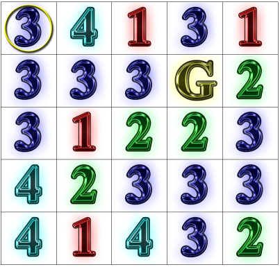

|
Rook Jumping Mazes(a.k.a. Number Mazes) |
| Rook Jumping Mazes |

| Introduction |
Rook Jumping Maze: Starting at the circled square in the upper-left corner, find a path to the goal square marked “G”. From each numbered square, one may move that exact number of squares horizontally or vertically in a straight line. How many moves does the shortest path have?

Solution (select to reveal): [13 moves: DRLUDLRULLRDU]
The origin of the Rook Jumping Maze (a.k.a. Number Maze) is unknown, but some
attribute its creation to the great puzzle innovator
Sam Loyd. Loyd's
"Back from the
Klondike" Queen Jumping Maze, which additionally allows diagonal moves,
appeared April 24th, 1898 in the New York Journal and Advertiser. It
also appears on page 106 of the
Cyclopedia of Puzzles, a collection of Loyd's work compiled by his son.
In the fall of 2009, Gettysburg College faculty and students participated in a
Rook Jumping Maze (RJM) design project, experimenting with maze generation and working to develop
measures of RJM quality to aid fully-automatic computer generation of these
mazes. Our results can be seen through the
Rook Jumping Maze of the Day
(also in
3D),
a Rook Jumping Maze Design Considerations paper (presented at the 7th International Conference on Computers and Games (CG2010) in Kanazawa, Japan),
a free iPhone app, and
Rook Jumping Maze
Generation, a set of introductory artificial intelligence programming
projects.
| Additional Resources |
© 2010 Todd W. Neller